底座
数据中心、供电制冷、服务器、交换机、路由器与存储设备。
先用一栋现代智能大楼建立直觉，再把每个比喻还原成准确的技术边界。从机房、VPC、ECS，一路走到跨云互联与政务 AI。
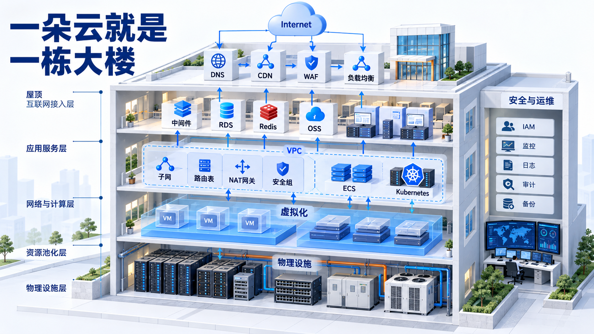
云不是一台巨大服务器，也不是漂浮在互联网里的东西。它是一套把计算、存储、网络等物理资源池化，并通过自动化、API、自助服务和计量方式交付的系统。
数据中心、供电制冷、服务器、交换机、路由器与存储设备。
虚拟化与容器把硬件变成可分配、可隔离的资源。
资源池化、自动化编排、弹性、API、自助服务、监控与治理。
Region 是相对独立的地理区域；AZ 是区域内故障域相对隔离的可用区。机房里由机柜组织服务器、网络和存储，电力与制冷同样是云的核心部件。
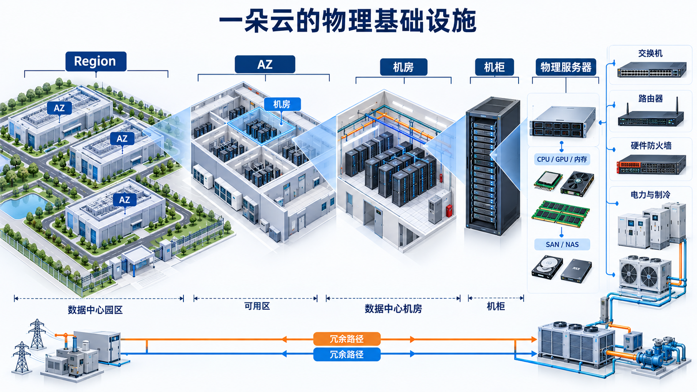
CPU 通用计算；GPU 高并行加速；Memory 工作数据的高速暂存。
Local Disk 紧邻主机；SAN 提供块存储网络；NAS 提供共享文件语义。
交换机负责同一网络内转发；路由器连接不同网络；硬件防火墙执行边界安全策略。
Hypervisor 把一台物理服务器的 CPU、内存与设备抽象成多个相互隔离的 VM；ECS 通常是云厂商交付的虚拟机实例。容器共享宿主操作系统内核，Kubernetes 编排的是 Pod 与工作负载。
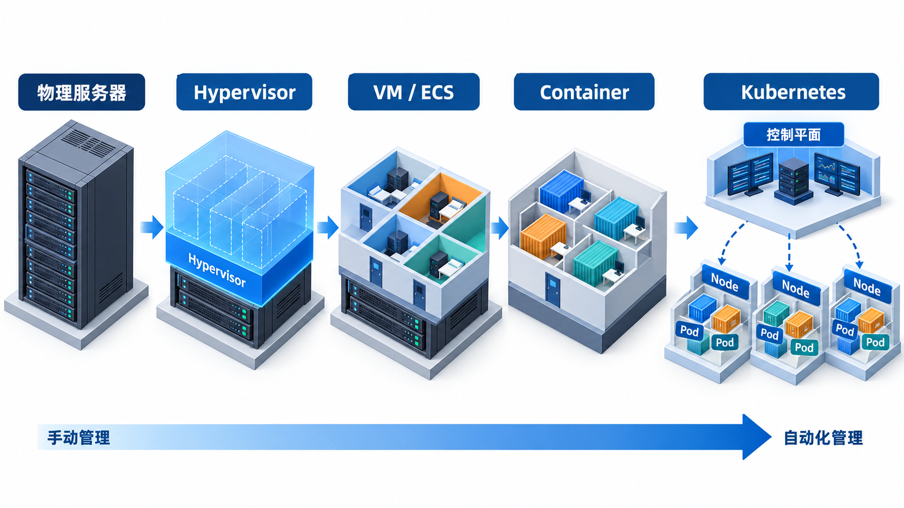
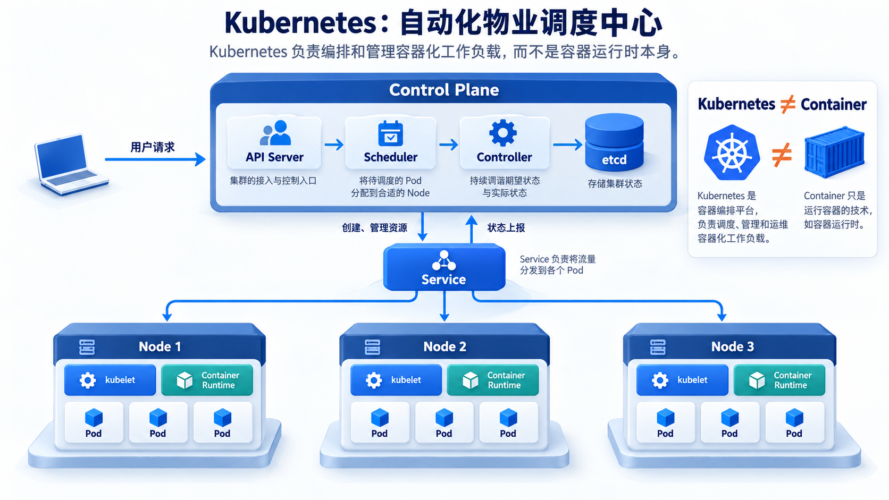
VPC 用 CIDR 定义私有地址空间，子网把空间按区域或用途切分；路由表决定目标流量的下一跳；网关连接网络边界；安全策略决定是否允许。
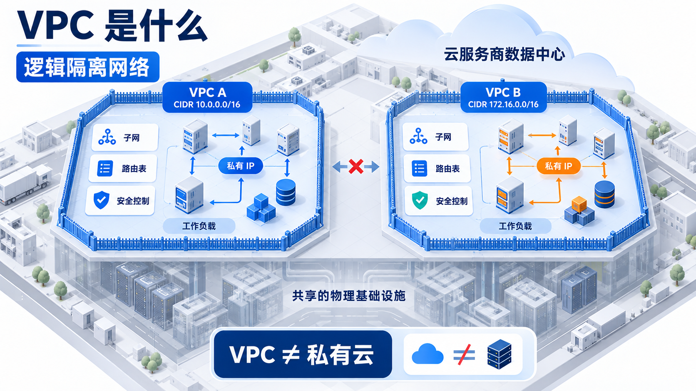
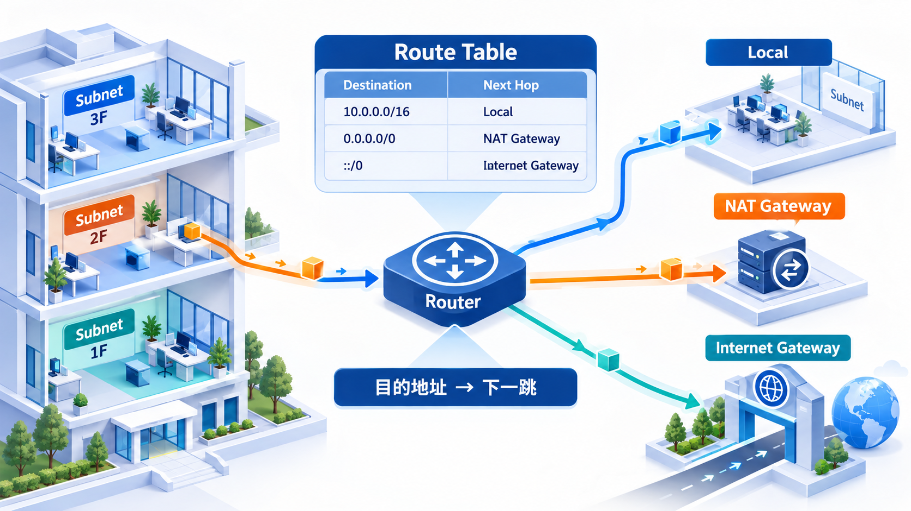
CIDR 表示地址块；Private IP 在私网中使用；Public IP 可从互联网路由；IPv6 提供更大的地址空间。
DHCP 自动分配网络参数；DNS 把名称解析为 IP。二者都不负责地址转换。
正向代理代表客户端访问外部；反向代理代表服务端接收请求，常用于 TLS、路由、缓存与负载分发。
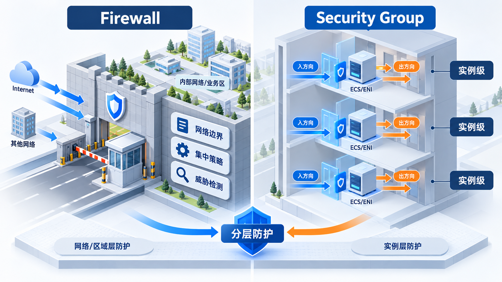
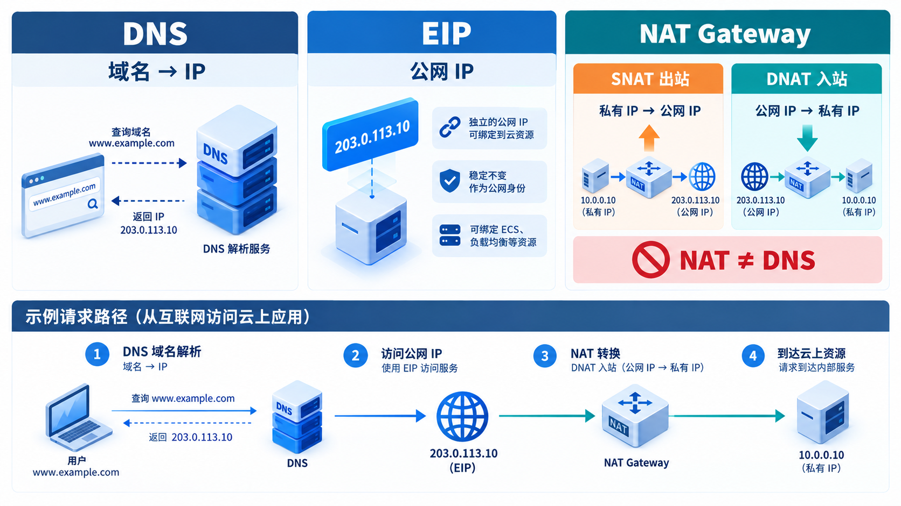
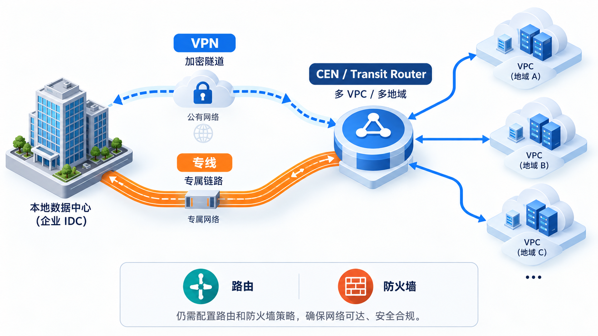
Router 根据路由表选择下一跳；Gateway 是某网络与另一网络或服务的出入口角色；NAT 是转换地址/端口的功能，常部署在 NAT Gateway 上。一个设备或云组件可以同时承担多个角色，但概念不能互换。
网络 ACL 常在子网边界以无状态规则控制报文；安全组通常与实例/网卡关联，常见实现为有状态；防火墙更强调网络边界、集中策略、应用识别与威胁检测。具体状态性和优先级以云厂商实现为准。
CDN 把可缓存内容靠近用户；WAF 检查 Web 攻击；负载均衡对外提供统一入口并把健康流量分发到后端。Nginx 可作为 Web Server、反向代理和软件负载均衡器。
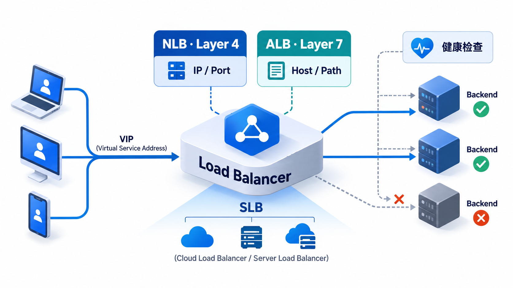
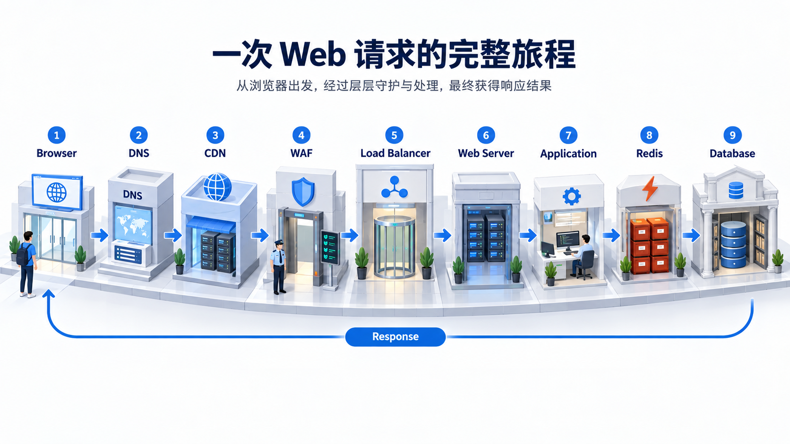
注意：这是一条典型路径，不是强制顺序。CDN 可能直接返回缓存；WAF、API Gateway、Ingress 和负载均衡的部署位置会因架构与产品实现不同。
块、文件和对象存储提供不同接口与一致性/性能特征，不能只按“容量”互相替换。Snapshot 是某时点的状态副本；Backup 更强调独立保留、恢复策略与灾难场景。
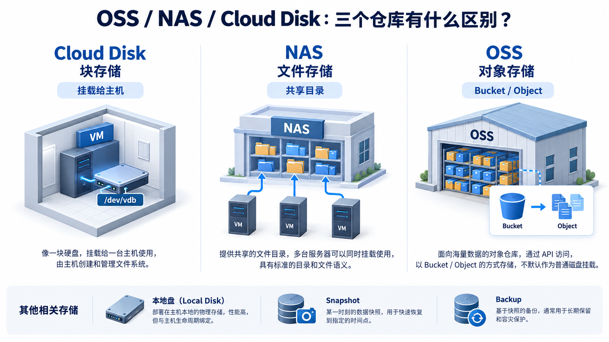
Database 是系统类别，MySQL/PostgreSQL 等是数据库引擎；RDS 是托管关系型数据库服务，替你承担部署、备份、补丁与高可用的一部分运维职责。Redis、MongoDB、Elasticsearch 与数据仓库解决的是不同数据模型和访问模式。
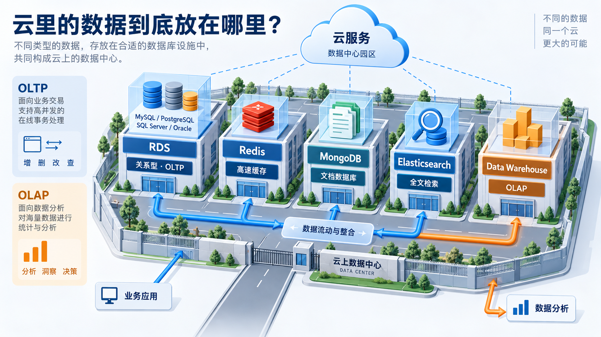
面向高并发、短事务与一致性，例如挂号、支付、订单。
面向大规模聚合分析，例如经营报表、趋势与决策。
以内存为主的高性能数据结构存储，常做缓存、会话、计数；不等于关系型数据库。
中间件位于应用与基础设施之间，提供可复用的通信、协调、治理与数据访问能力，让业务代码不必重复造“公共设施”。
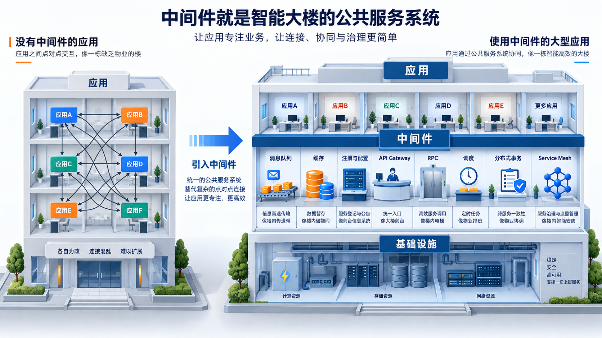
RocketMQ、Kafka、RabbitMQ 传递消息；选型关注顺序、可靠性、吞吐、消费模型与生态。
Nacos 可提供注册发现与配置；Dubbo/gRPC 提供 RPC；Service Mesh 把部分通信治理下沉到基础设施层。
API Gateway 统一入口；Scheduler 调度任务；分布式事务协调跨服务一致性，但会增加复杂度。
安全不是一堵墙，而是身份、网络、应用、数据和运维多层控制。IAM/RAM 管“谁能对云资源做什么”；安全组管“哪些网络流量能进出实例”，两者维度完全不同。
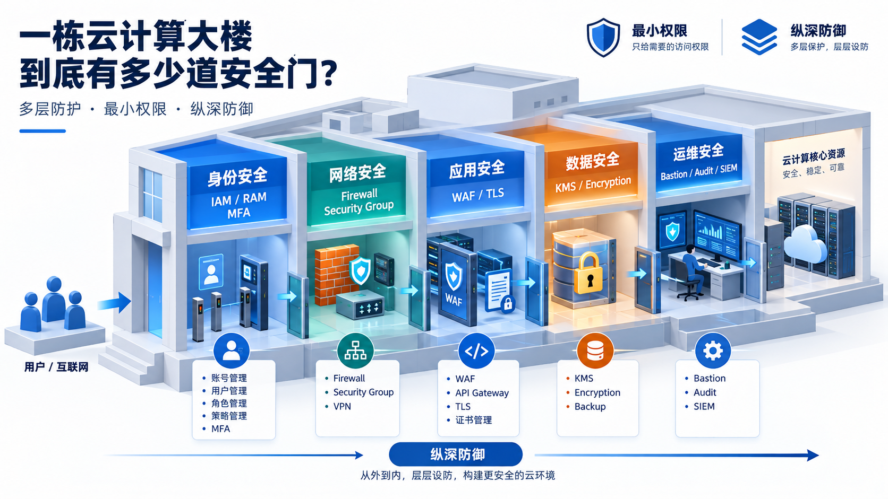
Account、User、Role、Policy、MFA；核心原则是最小权限、短期凭证和职责分离。
TLS 保护传输，静态加密保护介质；KMS 管理密钥生命周期。加密不替代访问控制。
堡垒机控制高权限入口；Access/Operation/Audit Log 记录不同活动；SIEM/SOC 做集中分析与响应。
Logging 记录事件，Metrics 衡量数值与趋势，Tracing 还原一次请求经过的服务链路。三者关联后，才能从“发现异常”走到“解释为什么”。
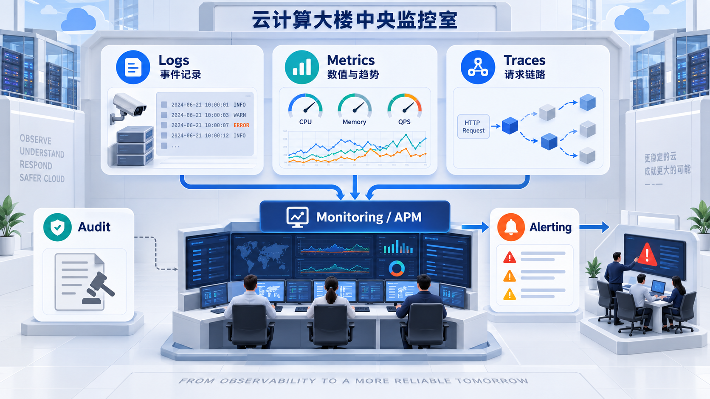
HA 用冗余减少单点故障；SLA 是服务承诺；两者都需要可测量指标和明确范围。
Backup 保护数据，Disaster Recovery 保护业务恢复能力；用 RPO/RTO 明确丢多少数据、多久恢复。
告警应对应可行动的问题，避免只监控资源而忽略用户体验与业务目标。
医院或政府采购一堆服务器只是“有硬件”。当计算、存储、网络被池化，具备统一控制面、自动化交付、自助服务、监控计量与治理后，才形成可运营的云平台。
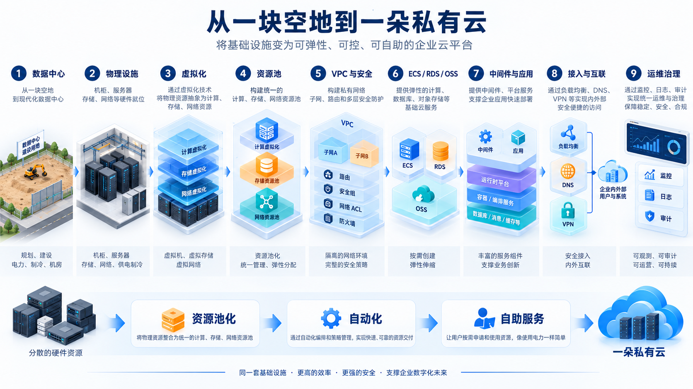
外部请求从名称解析与边缘防护进入，在 VPC 中被路由与分流，运行于 ECS 或 Kubernetes，访问中间件和数据服务；所有层都接受身份、网络、监控、审计与备份治理。
直连两个 VPC 可用 Peering；多 VPC、多地域常用中心辐射式网络；本地与云之间可用 IPsec VPN 或专线。PrivateLink/Endpoint 面向特定服务的私网访问，不等于打通整个网络。
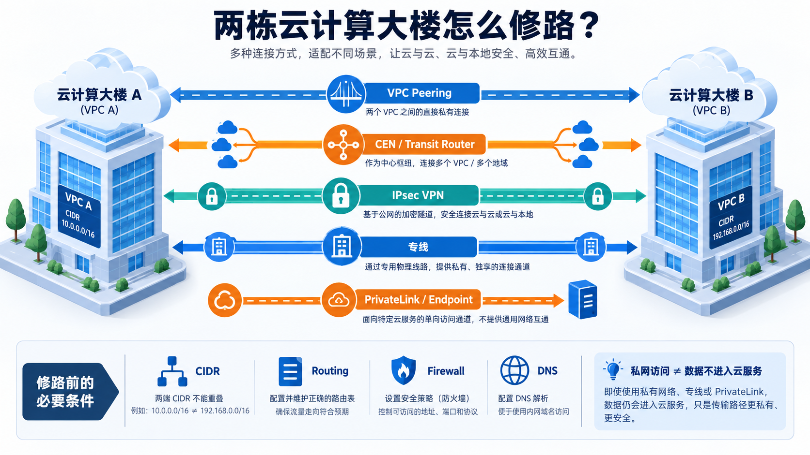
部署模式是责任、所有权、隔离与运营方式的组合，不是“安全等级”排行榜。医院和政府常因数据主权、低时延、既有系统与合规建设私有云，同时借助公有云的弹性、托管能力和 AI 服务形成混合架构。
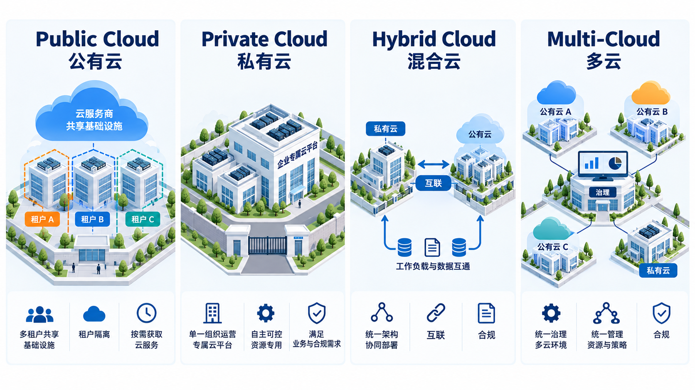
GPU 提供并行算力，Model Serving 让模型可被调用；LLM 按 Token 处理文本。Embedding 把内容映射为向量，Vector DB 做相似检索，RAG 把检索到的企业知识注入模型上下文。Agent 负责规划与调用工具。
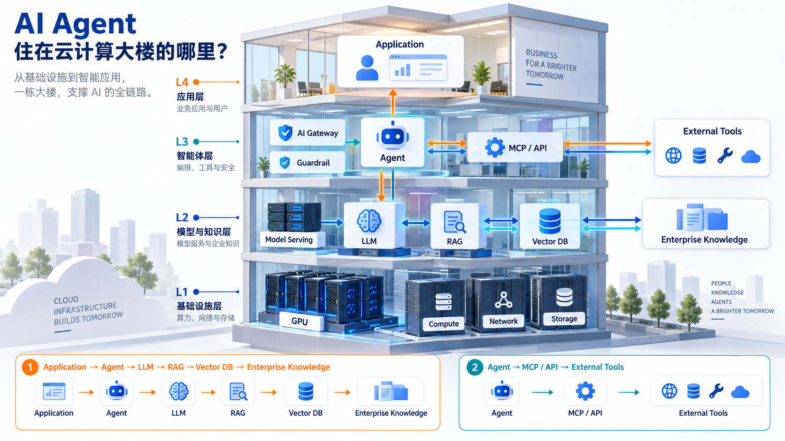
Application → Agent → LLM → RAG → Vector DB → Enterprise Knowledge。
Agent → MCP / API → External Tools。MCP 是连接工具与上下文的一种开放协议，不是模型本身。
AI Gateway 统一接入、策略和观测；Guardrail 限制输入输出风险。实际能力按所选产品验证。
安全目标不是让内网模型“自由上网”，而是建立一个最小化、可审批、可审计的公开知识查询通道。对外只发允许的 Query，对内返回经过内容安全检查的结果。
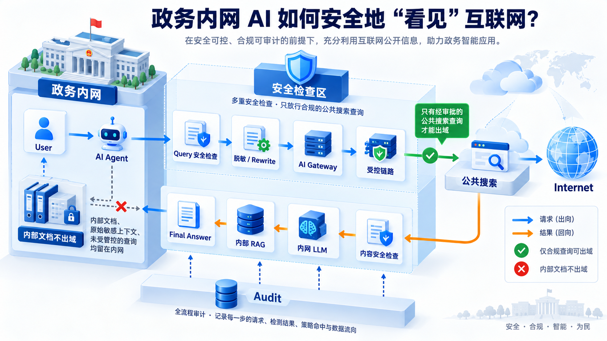
经策略允许、必要且最小化的公开检索 Query；最好经过敏感识别、脱敏和重写。
内部文档、敏感数据、用户原始上下文、未治理 Query、认证凭据和内部拓扑。
用户、时间、原始/重写 Query、策略命中、外部调用、返回内容、模型与最终答案。
落地提示：这是通用参考架构，不声称任何具体厂商已经完整支持。采购或设计时应逐项核对部署位置、数据驻留、日志保留、加密、内容安全、模型训练使用条款与监管要求。
先看“解决什么问题”和“工作在哪一层”，比记产品名更可靠。